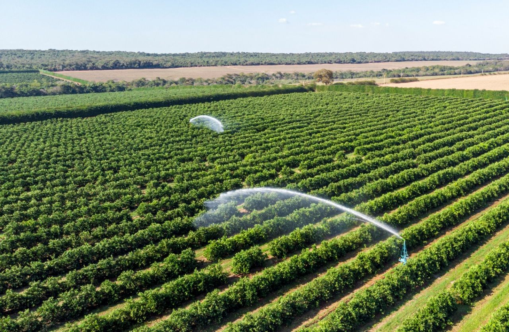
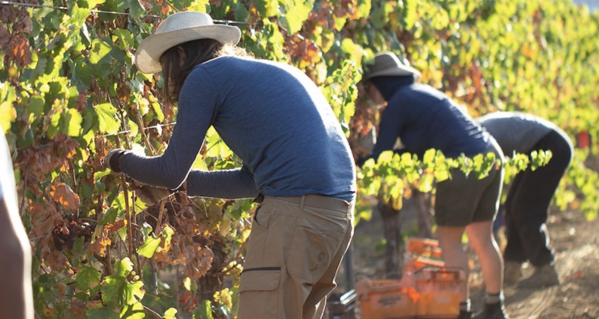
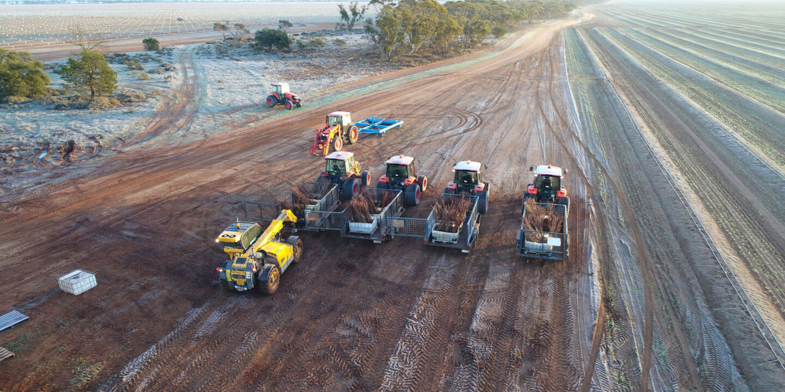

Responsible for supporting overall farm maintenance tasks including soil preparation, weed removal, irrigation system care, and basic maintenance of agricultural tools and equipment. This position is suitable for people who enjoy varied tasks and have basic mechanical skills.

